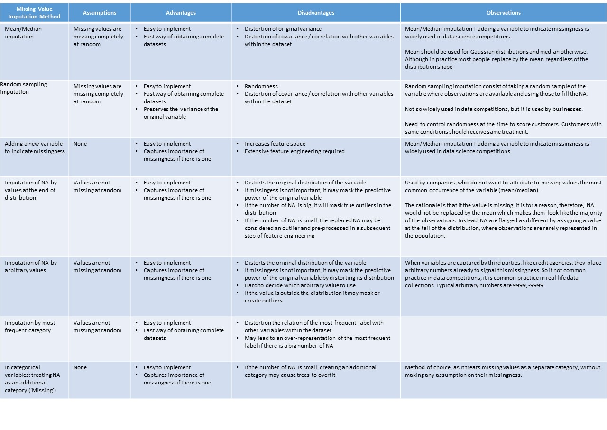
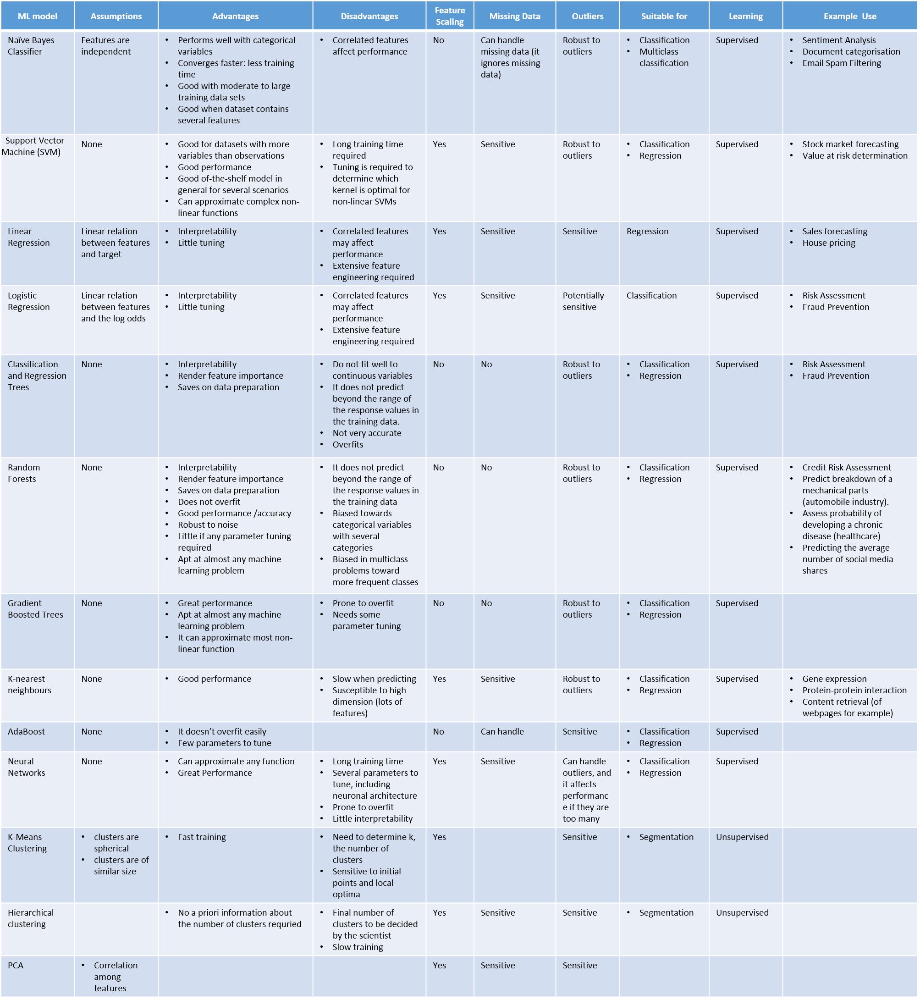

特征清洗 Feature Cleaning¶
1. 缺失值 Missing Data¶
本章节代码可在 这里 找到。
缺失值指的是数据集中数据不存在的情况。 产生缺失值的原因有很多，例如：
- 对于特定的样本，该变量的取值无法计算，例如分母为0，或未发生过满足计算条件的行为。
- 人为/机械因素导致的缺失，例如用户忘记填写，或者数据存储失败。
1.1 缺失机制 Missing Data Mechanisms¶
本节介绍数据产生缺失的几种机制，了解数据缺失的机制能够帮助我们决定使用哪种方法来处理缺失值。数据缺失的机制最早由 Rubin 提出 [1]，分别是：
1.1.1 Missing Completely at Random¶
完全随机缺失，指的是某变量缺失值发生的可能性与其他变量无关也与该变量自身无关，即任何一个样本在该变量上发生缺失的概率是等同的。在这种情况下，丢弃缺失的数据不会影响做出的推断。
1.1.2 Missing at Random¶
随机缺失，指的是某变量出现缺失值的可能性只与数据集中某些其他已知变量有关，而与该变量自身无关。
比如说，男人比女人更有可能公开体重，这时体重这个变量的缺失对于男性和女性而言都是随机缺失的，但因为女性更倾向于保留体重信息，体重在女性群体中会有更大的缺失比例。
随机缺失的情况下，丢弃含有缺失值的样本也是可以接受的，只要模型将所有与缺失相关的变量纳入在模型中。
1.1.3 Missing Depends on Unobserved Predictors¶
变量出现缺失值的可能性与某些未观测到的因素有关，此时缺失就不再是随机的了。这种情况下，“缺失” 这一信息本身就是有价值的，如果丢弃缺失的数据，做出的推断很可能是有偏的（因为相当于从整体中抽取了一部分特殊子集，而不是随机抽样）。
1.1.4 Missing Depends on Missing Value Itself¶
某变量出现缺失值的可能性只与其自身相关。例如，收入偏高的人士可能更不愿意提供自己的收入信息，这时收入这个变量的缺失与否就与变量本身的取值有关了。
1.1.5 How to Assume a Missing Data Mechanism¶
如何判断数据缺失机制
- 根据常识判断。很多时候业务经验和知识已经能告诉我们数据缺失的机制大概是什么。
- 统计测试。把数据集分为带缺失和不带缺失的两组，对两组作 t-test 检验是否有显著差异。如果存在差异，则可以认为数据不是完全随机缺失的。或者我们可以用“是否缺失”作为目标变量，进行逻辑回归观察其他变量与其是否相关。但需要注意是的，我们只能测试缺失是否是完全随机缺失。
1.2 如何处理缺失值 How to Handle Missing Data¶
1.2.1 List-wise Deletion¶
又称为 Complete-Case Analysis，即将所有含有缺失值的样本直接丢弃。
假设 该方法的前提是数据是完全随机缺失的。在这种前提下，丢弃所有带缺失值的样本等同于随机选择一部分数据子集。
- 优点
- 简单易实施
- 保留了变量的分布形状
- 缺点
- 如果缺失的记录太多，则导致损失大量数据，使得分析难以进行。因此该方法只适用于缺失比例不高的情况下。
- 当数据不是完全随机缺失时，使用该方法会使得处理后的数据与原始数据有系统性的差异。
1.2.2 Mean and Median Imputation¶
均值和中位数填充。填充指的是用某种统计手段来填补缺失的部分，目地是产生一个完整的数据集。均值和中位数填充即用缺失变量的平均数（如果变量呈高斯分布）或中位数（如果变量呈偏态分布）来填充缺失部分。
如果缺失的是类别型变量，则可以用众数（该变量出现频次最多值）来填充，原理一致。
假设 该方法的前提是数据是完全随机缺失的。在这种前提下，我们可以用该变量最常出现的取值来替换缺失值，因为这是该记录最大概率可能的取值。
- 优点
- 简单易实施
- 产生完整的数据集
- 缺点
- 使原始变量的方差变形
- 被填充的变量与其他变量的协方差也变形了，因为忽略了变量之间的关系
当使用这种方法时，如果缺失的比例过大，则势必会造成该变量的方差变小（因为我们只用一个值去填充所有缺失部分）。同样的原因，该变量与其他变量的协方差也会变形。
1.2.3 Adding a Variable to Capture NA¶
增加一个变量，表示观测值是否是缺失的。
如果数据是完全随机缺失的，我们可以用各类填充方法获取一个完整数据集，但如果数据不是完全随机缺失的，单纯的填充会使我们丢失一块重要信息。因为缺失不是完全随机产生的，所以是否缺失本身就携带了重要的信息。
如果我们怀疑数据的缺失本身是有信息价值的，可以增加一个额外的变量，来表示样本是否是缺失的。一般可以将它设为二值，0-不缺失，1-缺失。
假设 无。
- 优点
- 简单易实施
- 能保留缺失本身所携带的信息
- 缺点
- 使特征空间扩大
如果数据集中含有缺失值的变量过多，则增加对应的额外变量后数据集将变得很大。通常，该方法与均值/中位数填充共同使用，如此覆盖了2个方面：如果数据是完全随机缺失的，则均值/中位数填充能很好的产生一个完整数据集；如果不是，则添加一个额外变量可以很好的捕捉缺失信息本身。
1.2.4 End of the Distribution Imputation¶
上一节中我们提到如果数据不是完全随机的，则可以用增加额外变量的方法捕捉缺失信息，但原始变量中数据仍旧是缺失的；有时我们也不希望增加太多的额外变量。此时，我们可以用变量分布尾端的值来填充。
该方法的依据是，缺失是由于一定理由产生的，因此用均值或中位数来填充使该样本与大多数样本取值相似是不合理的，应该用一些尽量与众不同的值进行填充，例如分布尾端的极少出现的值。
假设 数据不是完全随机缺失。
- 优点
- 简单易实施
- 能保留缺失本身所携带的信息
- 缺点
- 改变了变量的原始分布，如果缺失信息并不重要，可能降低变量的预测能力
- 如果变量的缺失比例高，则会使真正的异常值被抹去
- 如果变量的缺失比例低，则会使填充后的样本被认为是异常值
由于上述缺点，该方法也较少使用。
1.2.5 Arbitrary Value Imputation¶
与上节的方法类似，但是是用一个人为定义的特殊值来填充。
假设 数据不是完全随机缺失。
- 优点
- 简单易实施
- 能保留缺失本身所携带的信息
- 缺点
- 改变了变量的原始分布，如果缺失信息并不重要，可能降低变量的预测能力
- 特殊值需要人为定义
1.2.6 Others¶
以上介绍了几种基本的缺失值处理方法。下面再简单补充几种较复杂的处理方法。
- Hot-Deck Imputation：热卡填充，对于一个包含空值的对象，该方法在完整数据中找到一个与它最相似的对象，然后用这个相似对象的值来进行填充。不同的问题可能会选用不同的标准来对相似进行判定。该方法概念上很简单，且利用了数据间的关系来进行空值估计。这个方法的缺点在于难以定义相似标准，主观因素较多。
- Cold-Deck Imputation：与Hot-Deck 相似，唯一不同的地方是数据来源是其他数据集。
- Clustering Imputation：用聚类算法（如KMeans）确认与含有缺失的样本最接近的K个样本，将这个K个样本的值加权平均的结果作为填充值。
- Random Sample Imputation：与均值填充类似，随机值填充试图尽可能的保留原始数据的统计量。具体方法是，从该变量已知的取值中取一组随机子集，作为填充的值。如此，能保证该变量的均值和方差不变，变量的分布也不变。该方法的前提同样是数据是完全随机缺失。但随机性也是该方法最大的问题，即同样的数据情况下，使用随机填充方法再建模，得到的解可能是不同的，因此使用较少。
- Multiple Imputation：多重插补法。较复杂，基本概念可以参考 [5]。
1.3 缺失值处理方法总结¶
图片来源： [6]
以上仅介绍了几种较简单的处理方法。总的来说，各种处理方法可以分为3类：
- 直接丢弃
- 填充/插补
- 捕捉缺失信息本身
另外，某些算法（如决策树及其衍生）能天然的处理缺失值，因此可以不做特别处理。
基本处理思路总结如下：
如果变量缺失的比例较大（如5%以上），则使用均值/中位数填充+增加额外变量的方法，来捕捉缺失信息。
如果不希望扩大特征空间，则尝试用分布尾端值或特殊值填充。
2. 异常值 Outlier¶
异常值指的是与其他样本显著不同的离群样本。更细致的定义：
“An outlier is an observation which deviates so much from the other observations as to arouse suspicions that it was generated by a different mechanism.”
—[D. Hawkins. Identification of Outliers, Chapman and Hall , 1980.]
异常值是否需要处理，和具体业务场景紧密关联。如果异常值是由于一些错误因素导致的，比如测量错误，则明显应该剔除。但也有很多时候，异常值的产生本身就是很有用的信息，比如一笔异常的交易很可能是欺诈事件。
均值、方差等统计量都会受到异常值的干扰。很多机器学习算法也会对异常值敏感，使得算法效果下降。因此有必要在特征清洗过程中对异常值做处理。
本章节代码可在 这里 找到。
2.1 异常值检测 Outlier Detection¶
异常值检测的方法有很多。事实上异常检测是机器学习中的一个单独的板块，涉及相当多的内容。关于异常值检测，可以参考 Charu的《Outlier Analysis》http://charuaggarwal.net/outlierbook.pdf
这里只简单介绍一种最基本的异常值检测方法。
2.1.1 Extreme Value Analysis¶
该方法是最基本的针对一维数据的异常值检测方法，核心在于找到该变量分布的统计尾端，认为尾端的数据是异常的。
三倍标准差法
假设变量是高斯分布的，如果样本的取值在平均值 +/- 3个标准差范围之外，则该样本认为是异常值（68-95-99法则），因为这个范围之外的数据出现的概率非常小。
箱线图法
利用数据中的四分位数和四分位差来判断异常值。首先计算变量的四分位差（IQR），再根据 IQR 和变量的四分位数计算上下界，在上下界之外的数据认为是异常值。
IQR = 75th分位数 - 25th分位数
上界 = 75th分位数 + （IQR * 1.5）
下界 = 75th分位数 - （IQR * 1.5）
视具体数据情况，IQR乘以的倍数可以适当放大或缩小。
- 优点
- 两种方法都不受极端值的影响。
- 缺点
- 如果数据是严重偏态分布的，则两种方法都不适用。第一种方法只适用于高斯分布的数据，箱线图法会使得大量样本都被视作异常。
2.2 如何处理异常值¶
根据异常值产生的机制，我们可以有以下几种处理方法。
2.2.1 Mean/Median Imputation or Trimming¶
与处理缺失值的逻辑类似，如果异常值的出现是完全随机的，则可以直接丢弃记录或均值填充。
2.2.2 Top-coding, Bottom-coding and Zero-coding¶
Top-coding 盖帽法，对变量的分布设置一个人为的最大值，即将任何超过最大值的点替换为该最大值。
Bottom-coding & zero-coding 与 top-coding 类似，设置一个最小值，低于该值的点替换为该最小值或0。
2.2.3 Discretization¶
将该变量离散化处理。具体见章节 离散化。
3. 类别变量标签过多 High Cardinality of Variables¶
类别变量的取值是从一组固定的类中取的，这个取值也叫做标签。例如，性别的标签可以是“男”或“女”。类别变量标签的数量可多可少，如果这个数量过多，可能会产生问题。
3.1 类别变量标签过多带来的问题¶
- 相对于标签较少的变量，标签过多的变量倾向于主导模型，特别是基于树的模型 (Why?) -TODO
- 标签过多的变量可能引入噪音，使得模型容易过拟合
- 可能发生这样的情况：某些标签只在训练集中有，测试集中无，使得模型过拟合
- 同理，也可能发生某些标签只在测试集中有，训练集中无的情况，使得模型无法对测试集预测
4. 类别变量的罕见值 Rare values¶
如果一个类别变量有很多标签，那经常会伴随的另一个问题是部分取值出现的频次很稀少（当然，变量的标签并不多的情况下也可能出现罕见值）。例如，假设有个变量是“贷款申请者的居住城市”，则可以想象大城市的出现频次很多，而像“阿克苏”这样的小城市出现的就很少。具体多“少”算是少没有一个固定的标准，一般来说如果只占总体的5%以下可以认为是罕见值。
4.1 类别变量罕见值带来的问题¶
- 变量中存在很多的罕见值可能引入噪音，使得模型容易过拟合
- 可能发生这样的情况：某些罕见值只在训练集中有，测试集中无，使得模型过拟合
- 同时，也可能发生某些罕见值只在测试集中有，训练集中无的情况，使得模型无法预测
4.2 处理方法¶
类别变量的罕见值和异常值相似，可能毫无用处带来噪音，也可能是重要的信息来源。一般来说，如果类别变量只有少量标签，则罕见值可能含有有价值的信息，如果类别变量有很多标签，则很有可能自然就出现很多罕见值，并且并无多大价值。
- One predominant category
- 该类别变量有一个主要标签，出现在超过90%样本中
- 观察变量与目标变量的关系，考虑是否有价值，选择保留或丢弃该变量
- A small number of categories
- 该类别变量只有少量标签
- 通常不需要处理
- High cardinality
- 该类别变量有很多标签
- 将罕见值合并为一个单独的类别（如‘Rare’类），或
- 将罕见值替换为该变量出现最多的类别
5. 类别变量的编码¶
类别型量无法直接计算，需要处理。
本章节代码可在 这里 找到。
5.1 One Hot Encoding¶
最常用的方法，又称“独热编码”或“一位有效编码”，即将一个类别变量转换为多个二值变量，这些二值变量只能取0/1，表示对应的类别是否激活。每一个二值变量也称为 dummy variable。
例如，性别变量经过one hot encoidng转换后：


值得注意的是，要表示一个K个标签的类别变量，我们可以转换为K个二值变量，也可以只用K-1个二值变量来表示（所有都取0时即代表剩下的那个标签）。
- 优点
- 方便实施
- 对数据不做假设
- 保留了所有原始信息
- 缺点
- 不会增加更多有预测力的信息
- 如果类别变量的标签很多，会大幅增加特征维度
5.1.1 何时使用K或K-1个二值变量¶
- 当原类别变量只有2个标签时，只创建1个二值变量
- 当原类别变量有多于2个标签时：
- 对于训练过程中同时考虑所有自变量的算法，创建K-1个二值变量
- 对于训练过程中只考虑部分自变量的算法，创建K个二值变量（例如基于树的方法）
5.1.2 如何处理类别变量标签过多的情况¶
只对出现频次最多的 Top N 个标签进行编码，把剩余的标签归为一组。虽然会损失一部分信息，但也能有效防止特征空间变得太大。
5.2 Ordinal Numbering Encoding¶
有序数值编码，指的是如果类别变量是定序变量，即顺序是有意义的，那么我们可以直接用数字来替代标签。例如，一星期中的第几天（周一、周二...周日）可以编码为1/2/.../7。
5.3 Target Guided Ordinal Encoding¶
根据目标变量进行有序编码。这类方法会对目标变量和自变量之间建立一个单调的关系（即两个变量同向或反向变化，一个变量的值增加时，另一个变量的值也增加或减小）。
- 优点
- 捕捉变量的内在信息，可能使变量的预测力加强
- 不会增加特征维度
- 缺点
- 可能导致过拟合
5.3.1 Ordering Labels According to the Target¶
根据目标变量的值将类别变量的标签排序。计算该类别变量每个标签下所有样本在目标变量上的平均值，再根据该平均值对标签进行排序，赋予对应的数字，替换原来的标签。
5.3.2 Mean Encoding¶
将类别变量的标签用目标变量的均值替换。与上一节的方法类似，不过是用该标签下所有样本在目标变量上的平均值直接替换原来的标签。这种方法下，会在目标变量与类别变量之间建立一个线性关系。
5.3.3 Probability Ratio Encoding¶
即将类别变量的标签用每个标签下所有样本在目标变量上等于1的概率的均值(P(1))与等于0的概率的均值(P(0))的比值(P(1)/P(0))来替换。
5.3.4 Weight of Evidence (WoE)¶
WoE广泛应用与金融领域个人信用风险预测中，作为衡量分组后模型对好坏申请人区分能力的指标。
计算 WoE = ln( (Proportion of Good Credit Outcomes) / (Proportion of Bad Credit Outcomes))
如果某组人群的 WoE = 0，则说明该组中好人和坏人的比例相同，WoE > 0 说明好人多于坏人，WoE < 0说明好人少于坏人。对类别变量进行 WoE 转换后特别适合逻辑回归。因为这样自变量都统一到同样的尺度，并且能直接根据回归的系数相互比较。
- 优点
- 将变量进行变换后特别适合逻辑回归模型
- 变换后的变量的系数可以互相比较预测能力，因为在同一测量尺度上
- 缺点
- 可能导致过拟合
- 不考虑变量之间的相互关系
6. 机器学习算法与特征清洗小结¶
图片来源： [7]
References
| [1] | Rubin, D. B. (1976). Inference and missing data. Biometrika 63(3): 581-592. |
| [2] | https://www.iriseekhout.com/missing-data/missing-data-mechanisms/assuming-a-missing-data-mechanism/ |
| [3] | https://liberalarts.utexas.edu/prc/_files/cs/Missing-Data.pdf |
| [4] | http://www.stat.columbia.edu/~gelman/arm/missing.pdf |
| [5] | http://www.statisticshowto.com/multiple-imputation/ |
| [6] | https://www.udemy.com/feature-engineering-for-machine-learning/learn/v4/content Ch7-43 |
| [7] | https://www.udemy.com/feature-engineering-for-machine-learning/learn/v4/content Ch3-25 |